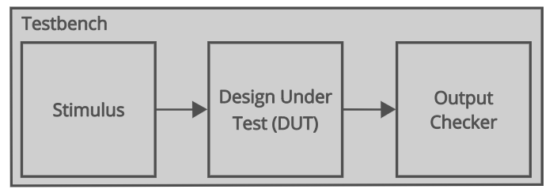
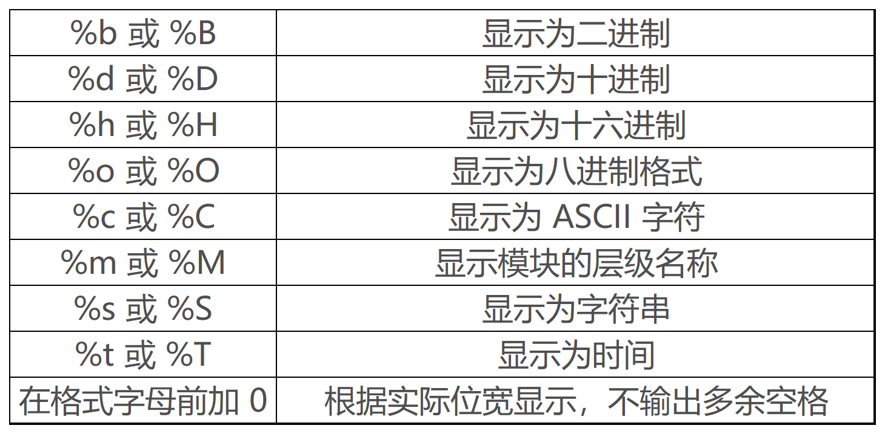

System verilog 基础实验
System verilog 基础实验¶
本节实验通过多路选择器的多种实现方式，练习System verilog代码的使用。同时学会编写Testbench。
编写仿真文件¶
一 Testbench 基本结构¶
System verilog 除了用来编写可以综合的硬件代码，还可以用来写仿真测试文件(Testbench：测试平台)
Testbench 由不可综合的 Verilog 代码组成，这些代码用于生成待测模块的输入，并验证待测模块的输出是否正确（是否符合预期）。下图展示了一个 Testbench 的基本架构。

其中：
-
激励（Stimulus Block）是专门为待测模块生成的输入。我们需要尽可能产生全面的测试场景，包括合法的和不合法的。
-
输出校验（Output Checker）用于检查被测模块的输出是否符合预期。
-
被测模块（Design Under Test, DUT。也称 Unit Under Test, UUT）是我们编写的 Verilog 模块，Testbench 的主要目的就是对其进行验证，以确保在特定输入下其输出均与预期一致。
编写 Testbench 的第一步是创建一个 Verilog 模块作为测试的顶层模块。与正常设计时的 Verilog module 不同，用于测试的模块应当没有输入和输出，这是因为 Testbench 模块应当是完全独立的，不受外部信号的干扰。
我们上次实验的tb_xxx.sv就是仿真测试文件。
verilator
在更复杂的系统仿真中，使用verilator仿真更为方便快捷。由于环境部署等原因，我们的实验内容不采用该方案，有兴趣的同学可以自己学习和使用。
Verilator是一款开源的SystemVerilog模拟器和 lint 系统，能够将Verilog/SystemVerilog代码编译为高性能C++模型，帮助开发者实现快速的设计验证。无论是芯片设计新手还是资深工程师，都能通过这款工具显著提升仿真效率，降低项目成本。
Verilator安装及使用方法参考 Verilator仿真
二 时序控制¶
与我们正常的设计代码不同，Testbench 中的代码并不需要被综合成实际电路，为此可以使用一些不可综合的语句，例如时序控制语句。
Verilog 使用 # 字符加上时间单位来模拟延时。例如 #10; 表示延迟 10 个时间单位后再执行之后的语句，对应着传输延迟。惯性延迟将延时语句写在与赋值相同的代码行中，这代表信号在延迟时间之后开始变化。例如：
wire Z, A, B;
assign #10 Z = A & B;
// A&B 的计算结果延时 10 个时间单位赋值给 Z
为了明确在仿真期间所使用的时间单位，我们需要使用 `timescale 指令。其格式为：
`timescale <unit_time> / <resolution>
其中，
`timescale 1ns / 1ps
代表仿真的一个时间单位是 1ns，最小时间精度为 1ps。如果使用了 #1.1111; 指令，则最终的延迟为 1.111ns（四舍五入）。
三 initial 与 always¶
在 Lab1 中我们介绍过，initial 块中编写的任何代码都会在开始时执行，但仅执行一次，而 always 块则会循环执行内部的代码。与 always 块不同，在 initial 块中编写的 Verilog 代码几乎都是不可综合的，因此基本上只被用于仿真与初始化信号。
思考：为什么initial块中的代码不可综合
这里综合的含义是指能生成对应的硬件电路。
always会根据时钟条件无限次触发，所以always里面语句就像硬件电路，来一个时钟，执行一次。
而initial就像是初始化程序，最开始把变量初始化，执行一次后不能再执行，直到再次复位。
initial begin
// 每隔 10 个时间单位就生成一个输入
a = 0; b = 0;
#10 a = 0; b = 1;
#10 a = 1; b = 0;
#10 a = 1; b = 1;
end
initial clk = 0;
always #20 clk = ~clk;
这是一个既有intial又有always语句的例子。 initial语句是clk初始为0， always语句使clk 每20个时间单位反转一次，这样就产生了周期为40个时间单位的时钟信号。
四 循环¶
除了之前赋值语句和分支语句，Verilog 中也有循环语句。它们分别是 while、for、repeat 和 forever 循环。循环语句只能在 always 或 initial 块中使用，其内部可以包含延迟表达式。
- While
while 循环的中止条件是 condition 为假。如果一开始 condition 已经为假，那么循环内的语句将一次也不会执行。一个简单的例子如下：
logic [3:0] counter;
initial begin
counter = 'b0;
while (counter <= 10) begin
#10;
counter = counter + 1'b1;
end
end
- For
for 循环的基本格式为：
for (initial_assignment; condition; step_assignment) begin
......
end
其中，initial_assignment 为初始条件。condition 为循环条件，为假时立即跳出循环。step_assignment 为改变控制变量的过程赋值语句，通常为增加或减少循环变量的值。
integer i;
logic [3:0] counter;
initial begin
counter = 'b0;
for (i = 0; i <= 10; i = i + 1) begin
#10;
counter = counter + 1'b1;
end
end
- repeat 和 forever略
五 系统任务¶
在 Verilog 中编写 Testbench 时，有一些内置的任务和函数可以为我们提供帮助。它们总是以美元符号 $ 开头，被统称为系统任务或系统函数。其中，下面三个是最常用的系统函数：\(display、\)monitor 和 $time。
- $display
$display 允许我们在控制台上输出一条消息。该函数的使用方式与 C 语言中的 printf 函数非常类似，这意味着我们可以轻松地在 Testbench 中创建文本语句，并使用它们来显示有关仿真状态的信息。
此外，我们还可以在字符串中使用特殊字符 % 来规范化显示信号数值。我们需要使用一个格式字母来决定以何种格式显示变量数值，在格式代码前面加上一个数字来确定要显示的位数。最常用的格式是 b（二进制）、d（十进制）和 h（十六进制）。

logic [4:0] x;
initial begin
x = 0;
repeat (10) begin
// 分别用 2 进制、16 进制和 10 进制来打印 x 的值
$display("x(bin) = %b, x(hex) = %h, x(decimal) = %d\n", x, x, x);
#10;
x = x + 2;
end
end
这段代码的输出结果为
x(bin) = 00000, x(hex) = 00, x(decimal) = 0
x(bin) = 00010, x(hex) = 02, x(decimal) = 2
x(bin) = 00100, x(hex) = 04, x(decimal) = 4
x(bin) = 00110, x(hex) = 06, x(decimal) = 6
x(bin) = 01000, x(hex) = 08, x(decimal) = 8
x(bin) = 01010, x(hex) = 0a, x(decimal) = 10
x(bin) = 01100, x(hex) = 0c, x(decimal) = 12
x(bin) = 01110, x(hex) = 0e, x(decimal) = 14
x(bin) = 10000, x(hex) = 10, x(decimal) = 16
x(bin) = 10010, x(hex) = 12, x(decimal) = 18
- $monitor
$monitor 函数与 $display 函数非常相似，但它一般被用来监视 Testbench 中的特定信号。这些信号中的任何一个改变状态，都会在终端打印一条消息。
下面是使用 $monitor 函数的一个例子：
reg [4:0] a, b;
initial begin
a = 0;
b = 20;
repeat (10) begin
#10;
a = a + 2;
b = b - 2;
end
end
initial begin
$monitor("now a = %d, b = %d\n", a, b);
end
这段代码的输出结果为
now a = 0, b = 20
now a = 2, b = 18
now a = 4, b = 16
now a = 6, b = 14
now a = 8, b = 12
now a = 10, b = 10
now a = 12, b = 8
now a = 14, b = 6
now a = 16, b = 4
now a = 18, b = 2
now a = 20, b = 0
- $time
最它可以用来获取当前的仿真时间。在 Testbench 中，我们通常将 $time 与 $display 或 $monitor 一起使用，以便在打印的消息中显示具体仿真时间。
下面是使用 $monitor 函数和 $time 的一个例子：
reg [4:0] a, b;
initial begin
a = 0;
b = 20;
repeat (10) begin
#10;
a = a + 2;
b = b - 2;
end
end
initial begin
$monitor("Time %0t: a = %d, b = %d\n", $time, a, b);
end
这段代码的输出结果为
Time 0: a = 0, b = 20
Time 10000: a = 2, b = 18
Time 20000: a = 4, b = 16
Time 30000: a = 6, b = 14
Time 40000: a = 8, b = 12
Time 50000: a = 10, b = 10
Time 60000: a = 12, b = 8
Time 70000: a = 14, b = 6
Time 80000: a = 16, b = 4
Time 90000: a = 18, b = 2
Time 100000: a = 20, b = 0
其中时间参数的设定为 `timescale 1ns / 1ps。